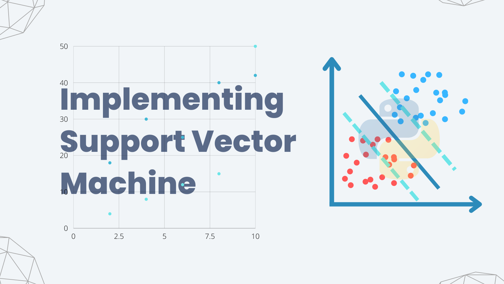

I developed a predictive model that identifies potential attrition risks, enabling proactive HR strategies to retain valuable talent. The project not only demonstrates my proficiency in data preprocessing, feature engineering, and model selection but also highlights the practical application of predictive analytics in HR management. The insights gained from this analysis empower businesses to make informed decisions, fostering a more stable and productive workforce.


In this project, I developed a predictive model that accurately anticipates future unemployment trends. The project demonstrates my skills in data exploration, feature selection, and model optimization, highlighting the potential of machine learning in economic forecasting. By addressing the critical issue of unemployment, this project contributes to evidence-based decision-making, enabling policymakers to implement targeted interventions and support measures.

In this project, I developed and trained a linear regression model to identify relationships and patterns within the historical WRI data, enabling the prediction of future risk levels. This model can serve as a valuable tool for portfolio management, allowing investors and decision-makers to make informed choices by incorporating risk assessments into their investment strategies.

In this project, I developed a robust image classification system using a combination of Convolutional Neural Network (CNN) and Support Vector Machine (SVM) algorithms. The goal was to accurately classify images into predefined categories, showcasing the versatility of deep learning and traditional machine learning techniques.

In this project, I created a machine learning web App to to predict the patient hospital charges using some demographic details Organizations like an insurance companies can employ this project for cash flow forcasting by better predicting patient charges using their basic health risks metrics.